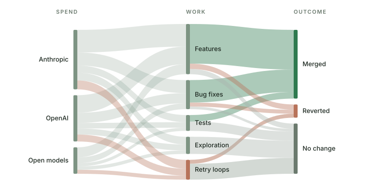

OpenTokenMini
OpenTokenMini
Most teams paying for AI agents can't say what the money buys.
OpenTokenMini is an open method and reference implementation to find out: what each agent spends, on which work, and what came out of it. Across OpenAI, Anthropic and open models.

Free and open source. Your own agent installs it and fits it to your setup. Unusual setup, or want it built for you?
Talk to us, we build it with you →